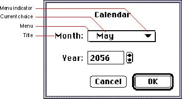
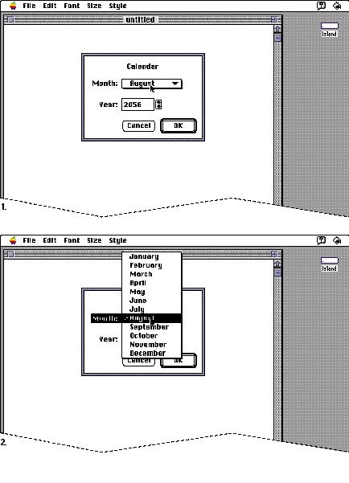
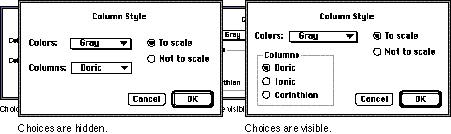
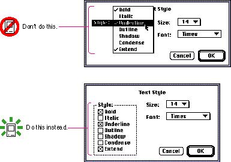
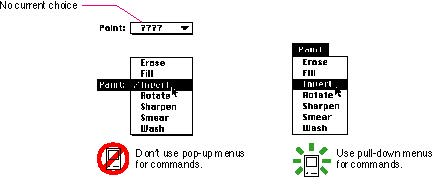

|
Pop-Up MenusPop-up menus present a list of mutually exclusive choices in a dialog boxor window. Pop-up menus are used as a means of selecting one choice from a list of many. Figure 4-41 shows a standard pop-up menu. A pop-up menu typically has a title that appears to the left of the menu in script systems that read from left to right. The menu itself looks like a rectangle with a drop shadow. The menu contains the text of the current choice and a triangle indicator that identifies this element as a pop-up menu. Figure 4-41 A pop-up menu and its parts  Pop-up menus act like other menus: the user can drag through them and choose an item, which then flashes briefly and appears as the current choice in the menu. The user can also move outside the menu to leave the current value active. (If a pop-up menu reaches the top or bottom of the screen, it scrolls like other menus.) Pop-up menus work well for presenting a number of
mutually exclusive choices. However, they hide these
choices from view. You should use a pop-up menu when the
user doesn't need to see all the choices all the time Figure 4-42 shows a pop-up menu in a dialog box and the same menu when it's open. Figure 4-42 Opening a pop-up menu  If you need to show only a few choices, consider using another interface element instead of a pop-up menu. Figure 4-43 shows such a situation. Since there are only three types of columns to choose from, and the user can make an exclusive choice, it makes more sense to use radio buttons for the choices. The radio buttons don't take up much more space than the pop-up menu would and they're always visible when the dialog box is open. Figure 4-43 Pop-up menus versus radio buttons  Pop-up menus provide a list from which only a single selection can be made. These choices could be expressed as nouns (things) or adjectives (states or attributes). Don't use pop-up menus when more than a single selection is needed. Allowing multiple selections from a pop-up menu gives the user ambiguous feedback. The user knows only the current selection, not all of the settings currently in effect. This forces the user to open the menu to know what all the settings are. Don't use pop-up menus for accumulating attribute lists
like text style choices. Style menus provide multiple
choice lists, which should be presented either as
checkboxes in a dialog box or pull-down menus. If you put a
multiple choice menu in a dialog box, you would destroy the
ability of Figure 4-44 shows an example of a pop-up menu with more than one choice in effect. The figure also shows one correct way to provide the same choices by using checkboxes. You could also provide this same set of choices with a pull-down menu. Figure 4-44 Pop-up menus versus checkboxes  Never create a hierarchical pop-up menu. Doing so would hide choices too deeply in the interface. It would also create an element that would be far too physically difficult to use. Pop-up menus are not a means of providing more commands. Therefore they shouldn't contain actions (verbs). If there were a pop-up menu that contained commands, there wouldn't be a logical choice to display as the current choice. Figure 4-45 shows this dilemma. Commands aren't persistent choices, they are always available and aren't current as soon as they finish operating. In other words, don't use a pop-up menu to present choices that should appear in pull-down menus. Since the choices in a pop-up menu aren't visible at all times, the menu items shouldn't contain keyboard equivalents. Figure 4-45 Don't use pop-up menus for commands  Subtopics |